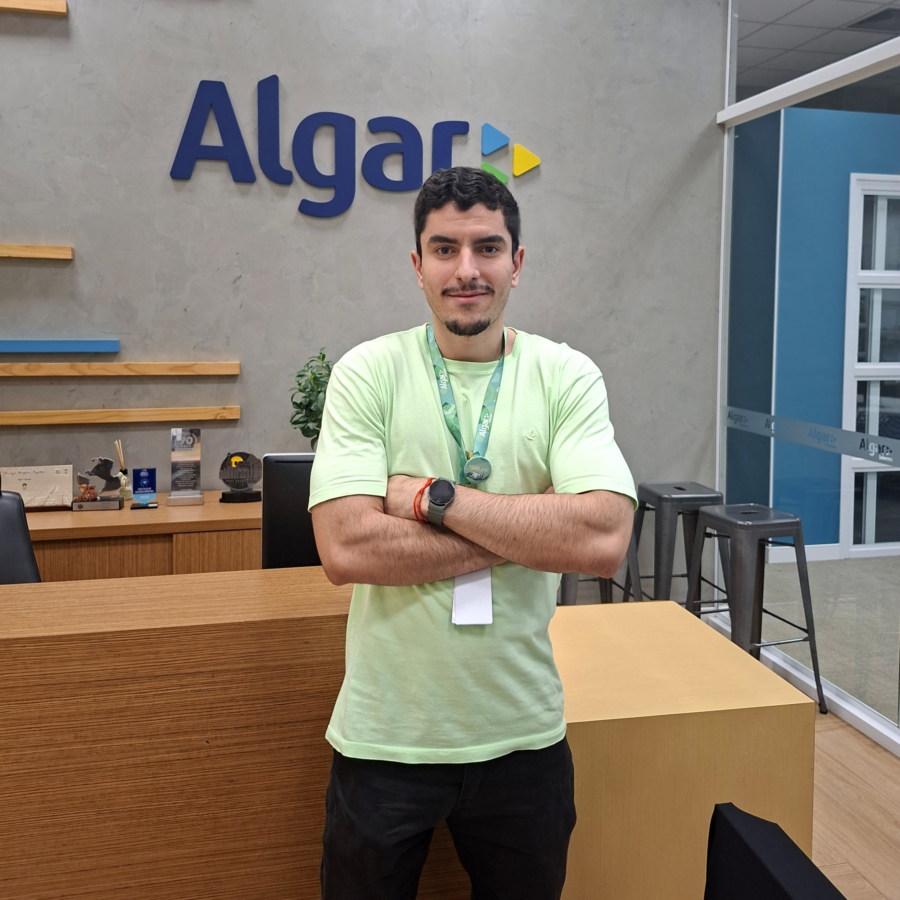

Sobre mim
Cursando Gestão da Informação na Universidade Federal de Uberlândia (UFU), tenho uma sólida base acadêmica complementada por experiências práticas relevantes. Durante meu tempo na universidade, fui monitor nas disciplinas de Cálculo I e II, ajudando estudantes com dúvidas e dificuldades, o que reforçou minha paixão por compartilhar conhecimento e trabalhar em equipe. Também participei do projeto de extensão 'Prática do Orçamento Familiar', contribuindo para a criação de conteúdo digital focado em educação financeira.
Atualmente estou estagiando na Algar Telecom, atuando na área de Análise de Dados, onde desenvolvo dashboards e relatórios para auxiliar na tomada de decisão da empresa, com relação aos atendimentos. Meu trabalho envolve a extração, transformação e visualização de dados, utilizando ferramentas como Power BI e MySQL. Além disso, concluí cursos como Engenharia de Dados (Santander Coders) e Desenvolvedor Back-end (Oracle Next Education - Alura), que me proporcionaram conhecimentos em Git e versionamento, banco de dados, SQL, Web Scraping, Java, SpringBoot, APIs e outras importantes ferramentas.
